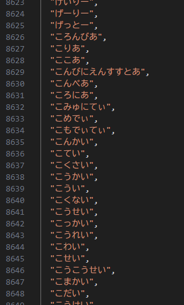
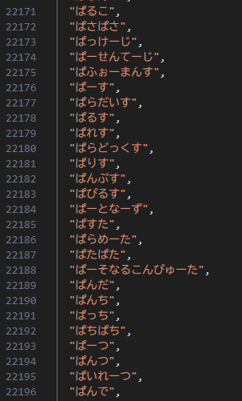

あいだ文字の開発手順
投稿日: 2025-05-05
こんにちは、のらうさぎです😆
以前作ったあいだ文字の開発手順について解説します。
初めて作ったサイトなので、開発手順等参考にならないかもしれませんが紹介します！
作ってしばらく経過していますので、詳細は書いていけないのですが覚えている限り書きます。
開発フロー
1.要件定義・・・どんな画面にするかを考える
2.ワイヤフレーム作成・・・手書きでラフ画を作成
3.環境構築・・・Node.jsとGitをインストール
4.画面作成・・・Tailwind CSSで素早く動く画面を作る
5.ロジック実装・・・遊べる機能のみをコード化する
6.動作確認・デバッグ・・・それぞれの各機能を確認する
7.Git連携&デプロイ・・・Vercelで公開する
ファイルの構成
aida-moji
├─ index.html
├─ style.css
├─ app.js
└─ words.json
辞書ファイルを用意


中身をそれぞれ"あ"から始まって"ん"で終わる言葉を"あ～ん"まで調べて追加する
結構手間がかかる作業ですが根気強く追加していきましょう♪
ただ、これプログラムでできそうだなと思って、pythonで仮で言葉を追加するプログラムを作って
途中からそれで一気に終わらせました！
また、このあと各htmlファイル等コードを一通り書きました。
各ファイルのコードの修正
次に各ファイルの微修正を重ねました。
実行してみると動作不良があり、そのエラーの改善をしました♪
ちょっと逸れるんですが、jsonファイルは1GBを超えるならファイルを分けたほうがいいっぽい(言語による)
のらうさぎ調べなんで、間違ってるかもなんですが😅
JSは1GB程度、Queryは100MB以下、Oracle Databaseは32MBらしいですよ！
ご参考までに!!!
各ブラウザでテスト
Chromeで基本的に実行・テストしていたんですが、他の検索エンジン(Safari,Firefox,Edge...)でも行います♪
それぞれレイアウト処理やフォントのレンダリング等がChromeと異なる部分がある！
主に、確認するポイントは、レイアウトのずれ、フォントサイズ、入力フォーム挙動です。
追加機能の実装
まず、UIに連続正解と最高記録を表示しました！
app.jsに管理ロジックを追加しました。
次に、タイムアタックモードと連続正解の追加をし、Xへ記録を共有する機能も実装しましたよ♪
Vercelで公開
作業フォルダでGit初期化し、リモート登録してプッシュ！！
次にVercelでGitと連携し、リポジトリを選択する。
Vercelを使うと自動でHTTPSを有効化してくれるので、SSL証明書は設定不要みたい！
カスタムドメインを設定することもできたみたいだけど、今回は諦めました😶🌫️
まとめ
今回の記事では、初めて作ったあいだ文字
について開発手順を解説しました♪
ぜひ、リアクション、コメントしていってください！
個人的な質問などは僕のX
にメッセージ送ってください😁